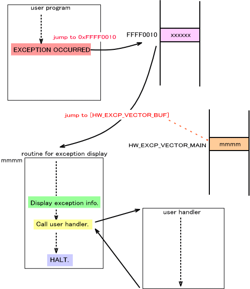

This page explains the exception display system used by NitroSDK to show information about exceptions generated on ARM processors.
Initialize for Display of Exceptions
NitroSDK includes a system for displaying information when processor exceptions occur. The register and type of exception get displayed. The exception display system is enabled by initialization using OS_InitException()OS_Init()OS_Init()
This initialization function sets the SDK exception vector (the address for transfer of control when an exception occurs) to the address of the function that displays exceptions. However, debug tool does not perform exception display since it runs part of the debug function using exceptions. The current operating environment is determined automatically, so nothing is required from the application.
The exception display system is a debug feature, so it is disabled in the FINALROM build.
Positioning the Exception Vector
The ARM processor specifications allow you to set the exception vectors at either addresses 0x00000000 to 0x0000001C or 0xFFFF0000 to 0xFFFF001C. The former are called normal vectors, while the latter are called high vectors.
OS_SetExceptionVectorLower()0x0000000 to 0x0000001C (normal vectors).
OS_SetExceptionVectorUpper()0xFFFF0000 to 0xFFFF001C (high vectors).
NitroSDK uses the high vectors by default. Unless you have a special reason, use the high vectors and do not change the settings.
Setting a User Handler
When exceptions occur, control can be transferred to a user-specified exception handler. To do this, register the handler with OS_SetUserExceptionHandler()
Process Flow After an Exception Occurs
The following exceptions exist for ARM:
| Exception type | Normal vector address | High vector address |
|---|---|---|
| Reset | 0x00000000 | 0xFFFF0000 |
| Undefined instruction | 0x00000004 | 0xFFFF0004 |
| Software interrupt | 0x00000008 | 0xFFFF0008 |
| Pre-fetch abort | 0x0000000C | 0xFFFF000C |
| Data abort | 0x00000010 | 0xFFFF0010 |
| IRQ | 0x00000018 | 0xFFFF0018 |
| FIQ | 0x0000001C | 0xFFFF001C |
Because IRQ exceptions are used as interrupts, they are excluded from the process flow described below.( (For more information, see
When an exception occurs, control is transferred to the pertinent vector address, as shown in the table above. This normally involves use of high vector addresses.
After that, if the debug tool is being used, control is transferred to a special debugger process routine. This special routine performs debugger-related processing and returns control to program. The following describes instances when the debug tool is not used.
Control then moves to the address stored in HW_EXCP_VECTOR_MAINOS_InitException().
The user handler is called within this routine (if a user handler was registered with OS_SetUserExceptionHandler()
Example
In the example below, a data abort exception has occurred. The high vector fake address for a data abort exception is 0xFFFF0010, so the process jumps to 0xFFFF0010. This leads to the address stored in HW_EXCP_VECTOR_BUF

List of OS Functions (Exception)
03/08/2005 Unified the Japanese term for "interrupt."
12/14/2004 Corrected terms and word endings.
11/16/2004 Initial version.
CONFIDENTIAL